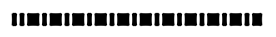

Несколько виджетов позволяют вам указывать пунктирную контурную линию. Опции dash и dashoffset предоставляют вам тонкое управление над точной геометрией пунктирной линии.
dash
Эта опция указывается в виде кортежа целых чисел. Первое целое число указывает, сколько пикселей нужно нарисовать. Второе целое число указывает, сколько пикселей нужно пропустить перед тем, как начать рисовать снова, и так далее. Когда все целые числа в кортеже исчерпаны, они повторяются в том же порядке, пока граница не будет завершена.
Например,
dash=(3,5)создает чередующиеся пунктирные линии длиной 3 пикселя, разделенные промежутками длиной 5 пикселей. Значениеdash=(7,1,1,1)создает шаблон пунктир-точка, где пунктир в семь раз длиннее, чем точка или промежуток вокруг точки. Значениеdash=(5,)создает чередующиеся пунктирные линии и промежутки длиной в пять пикселей.
dashoff
Чтобы начать рисунок пунктирной линии не с начала, а с другой точки в цикле, используйте опцию
dashoff=n, гдеn- количество пикселей, которые нужно пропустить в начале шаблона.
Например, для опций
dash=(5, 1, 2, 1)иdashoff=3первый шаблон будет состоять из: 2 включенных, 1 выключенный, 2 включенных и 1 выключенный. Последующие шаблоны будут состоять из 5 включенных, 1 выключенный, 2 включенных и 1 выключенный. Ниже показан снимок экрана линии, нарисованной с использованием этой комбинации опций:
